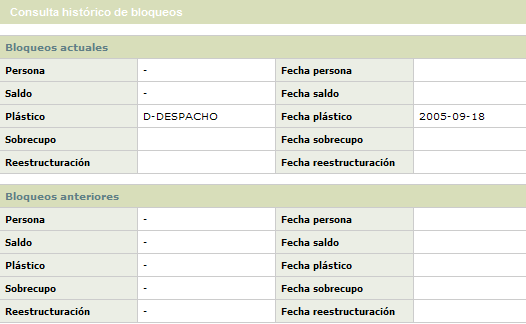
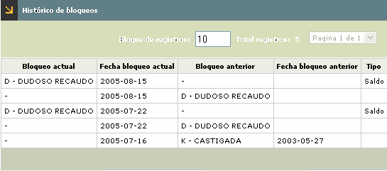

Estados y bloqueos |
En este formulario que se invoca desde el detalle consulta de la tarjeta, la entidad puede consultar la información acerca de los estados y bloqueos que ha tenido la tarjeta y la fecha en la cual estos fueron aplicados o levantados.
La opción muestra al ingresar un formulario estructurado en dos bloques que despliegan la información de los bloqueos que en la actualidad tiene la tarjeta y los que tenía con anterioridad. El formulario contiene adicionalmente el hipervínculo Consulta histórico de bloqueos que le permite al usuario consultar la información detallada de los diferentes bloqueos que haya tenido la obligación.
Los campos descritos a continuación aplican igual para los bloques de datos Actuales y Anteriores con la respectiva interpretación.

Descripci�n de campos
| Persona |
Campo que muestra el mas reciente bloqueo aplicado al cliente titular de la tarjeta. |
|
Fecha persona |
Este campo despliega la fecha en la cual se le aplicó al cliente el bloqueo. Cuando solo existe dato de fecha y el bloqueo se encuentra en blanco, se debe interpretar como la fecha en la que se levantó este tipo de bloqueo. |
Saldo |
Campo que muestra el mas reciente bloqueo aplicado sobre el saldo de la tarjeta cuando por ejemplo ha estado en mora. |
Fecha
saldo |
Este campo despliega la fecha en la cual fue aplicado el bloqueo sobre el saldo de la tarjeta. Cuando solo existe dato de fecha y el bloqueo se encuentra en blanco, se debe interpretar como la fecha en la que se levantó este tipo de bloqueo. |
Plástico |
Campo que muestra el mas reciente bloqueo aplicado sobre el plástico propiamente dicho por ejemplo cuando se ha reportado la pérdida o robo de la misma, la cancelación voluntaria o no, bloqueos preventivos entre otros. |
Fecha
plástico |
Este campo despliega la fecha en la cual se aplicó el bloqueo a la tarjeta o plástico. Cuando solo existe dato de fecha y el bloqueo se encuentra en blanco, se debe interpretar como la fecha en la que se levantó este tipo de bloqueo. |
Sobrecupo |
Campo que muestra el mas reciente bloqueo aplicado que ha tenido la tarjeta por haber incurrido en sobrecupo. |
Fecha
sobrecupo |
Este campo despliega la fecha en la cual se aplicó el bloqueo por sobrecupo a la tarjeta. Cuando solo existe dato de fecha y el bloqueo se encuentra en blanco, se debe interpretar como la fecha en la que se levantó este tipo de bloqueo. |
Reestructuración |
Si la tarjeta se encuentra reestrucuturada o refinanciada, en este campo se muestra el bloqueo correspondiente. |
Fecha
reestructuración |
Este campo despliega la fecha en la cual se aplicó el bloqueo por reestructuración a la tarjeta. Cuando solo existe dato de fecha y el bloqueo se encuentra en blanco, se debe interpretar como la fecha en la que se levantó este tipo de bloqueo. |
Consulta histórico de bloqueos: si el actor invoca el hipervínculo Consulta histórico de bloqueos, se despliega un nuevo formulario en el cual se muestra al usuario la información detallada de los diferentes estados que ha tenido la tarjeta y que han sido aplicados incluso con anterioridad a los que se muestran en el formulario inicial.
El único campo adicional que contiene este formulario es 'Tipo' que indica si la información que muestra el registro corresponde a un bloqueo de persona, saldo, plástico, sobrecupo o reestructuración.
El formulario básicamente muestra la información del bloqueo que tenía la tarjeta en cada evento mediante el cual se le aplicó / levanto un bloqueo a la misma.
